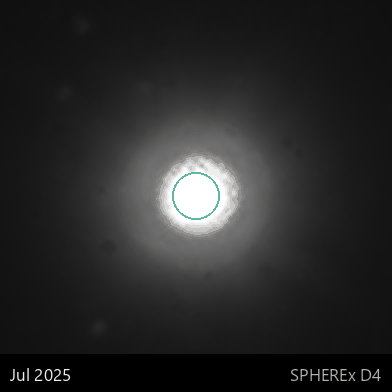

Géante rouge pulsante (variable de type Mira) · M
R Draconis
Une géante rouge qui enfle et se contracte, et dont l’éclat monte et descend en 245 jours environ.

Une géante rouge en fin de vie, qui enfle et se contracte tous les 245 jours. Chaque image couvre environ un mois. L’étoile est si brillante qu’elle sature les détecteurs ; l’outil mesure donc sa lueur extérieure. La courbe de luminosité monte et descend au rythme de la pulsation.
Ce qu’il faut regarder
Chaque image couvre environ un mois. Cette étoile est si brillante que son cœur sature tous les détecteurs ; l’outil mesure donc sa faible lueur extérieure à la place. La courbe de luminosité montre la pulsation : maximum en juillet 2025, environ deux fois moins brillante à l’automne suivant, et de nouveau en hausse sur les dernières images.
SPHEREx a 2 497 poses de ce point, du 24 avril 2025 au 27 septembre 2026.
Ouvrir R Draconis dans Chronosphere
Sources: SPHEREx, NASA/JPL-Caltech, IRSA · SIMBAD · Gaia DR3